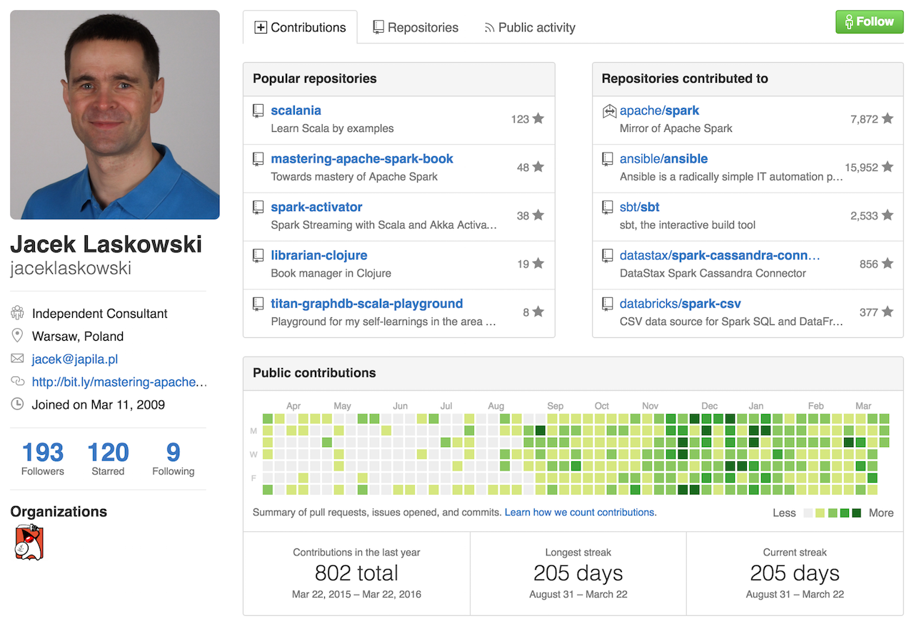
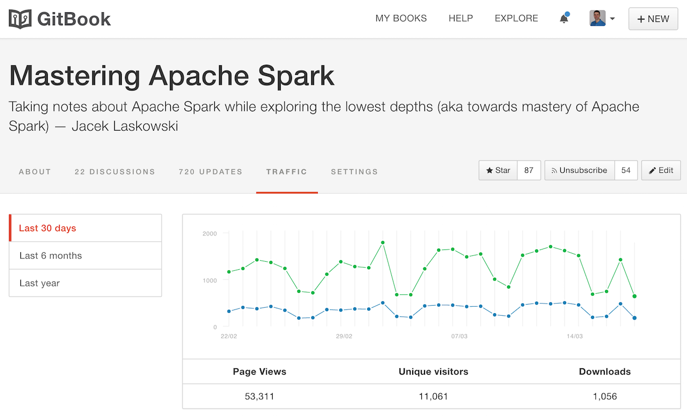

Scala Exercises
Jacek Laskowski / @jaceklaskowski / GitHub / Mastering Apache Spark Notes

- Jacek Laskowski is an independent consultant
- Contact me at jacek@japila.pl or @JacekLaskowski
- Delivering Development Services | Consulting | Training
- Building and leading development teams
- Mostly Apache Spark and Scala these days
- Leader of Warsaw Scala Enthusiasts and Warsaw Apache Spark
- Java Champion
- Blogger at blog.jaceklaskowski.pl and jaceklaskowski.pl
https://github.com/jaceklaskowski

http://bit.ly/mastering-apache-spark

Exercise 1 - Reading CSV
- Use Scaladoc at http://www.scala-lang.org/api/current/
- Use sbt shell early and often
~andcompile- [TAB][TAB] We're TAB lovers!
object ... extends Appargscollection to access argumentsio.Source.fromFileandgetLinesString.split- Print results using
Seq.foreachandprintln sbt run
Exercise 2 - Using foldLeft
- Count the sum of the 10-element collection using foldLeft
(0 to 9).foldLeft...- Use Scaladoc at http://www.scala-lang.org/api/current/
Questions?
- Why do we used 0 as the initial argument since it was part of the collection anyway?
Exercise 3 - More of foldLeft
-
Collect odd and even numbers in buckets "odds" and "evens" in a
Map. (0 to 9).foldLeft...- The result:
-
Map("evens" -> Seq(0,2,4,6,8), "odds" -> Seq(1,3,5,7,9))
-
Questions?
- Visit Jacek Laskowski's blog
- Follow @jaceklaskowski at twitter
- Use Jacek's projects at GitHub
- Read Mastering Apache Spark notes.